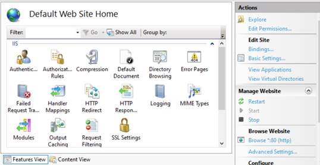
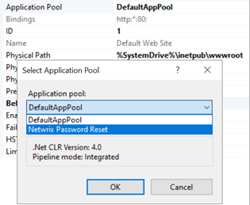
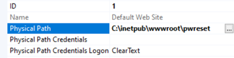
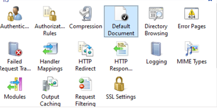
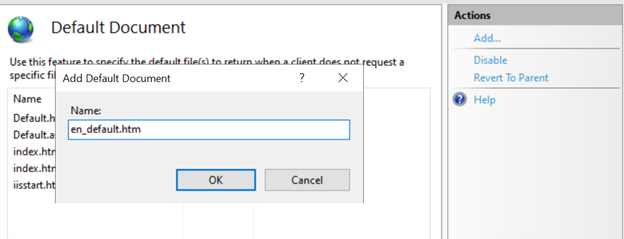
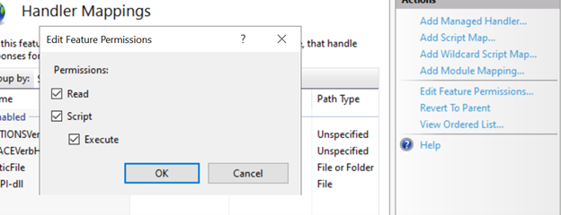
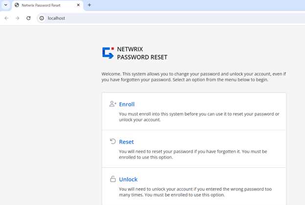

Question
How can you get Netwrix Password Reset to redirect a site to its hostname?
Answer
Follow the steps below to configure Netwrix Password Reset to redirect a site to its hostname:
-
Open IIS Manager.
-
Select Default web site and click Advanced Settings... in the right pane.

-
Change the Application Pool from DefaultAppPool to Netwrix Password Reset.

-
Change Physical Path from %SystemDrive%\inetpub\wwwroot to %SystemDrive%\inetpub\wwwroot\pwreset.

-
Click OK, then double-click the Default Document icon in the middle pane.

-
Click Add... in the right pane, then enter en_default.htm and press Enter.

-
Double-click Handler Mappings and select ISAPI-dll.
-
click Edit Feature Permissions... in the right pane.

-
Check Execute, then OK.
Your default page when inputting Hostname or IP address should now be your Netwrix Password Reset site.
